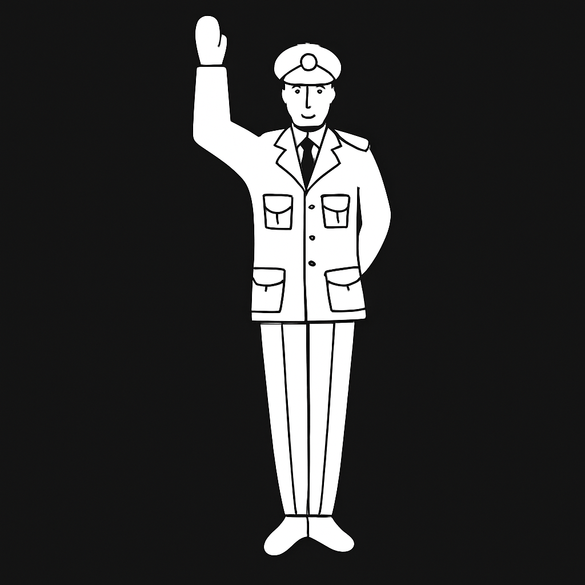
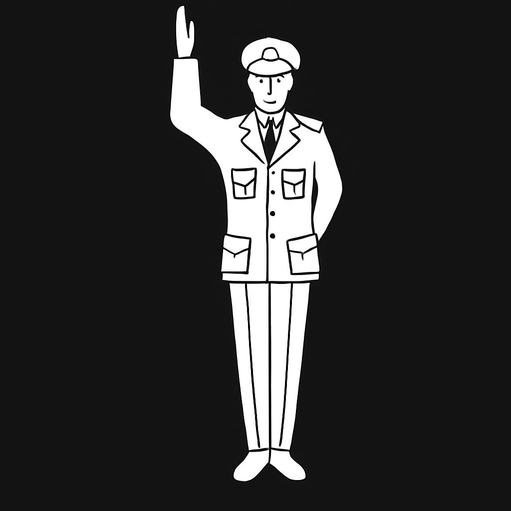
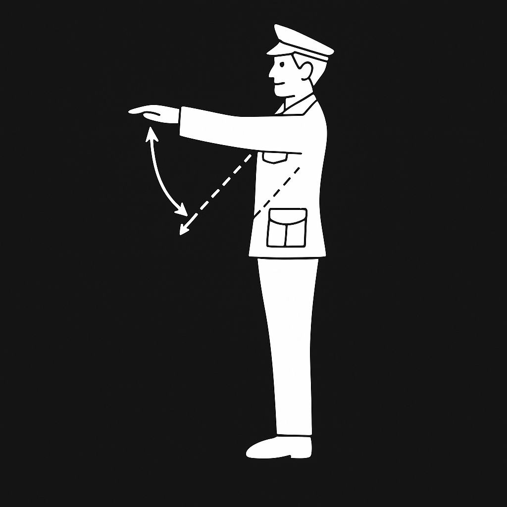
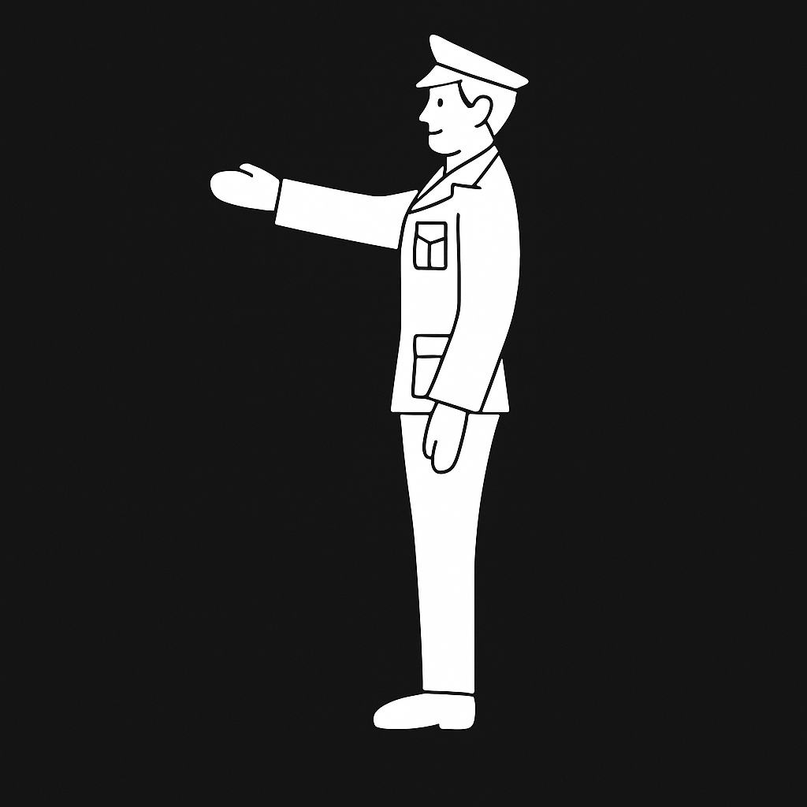
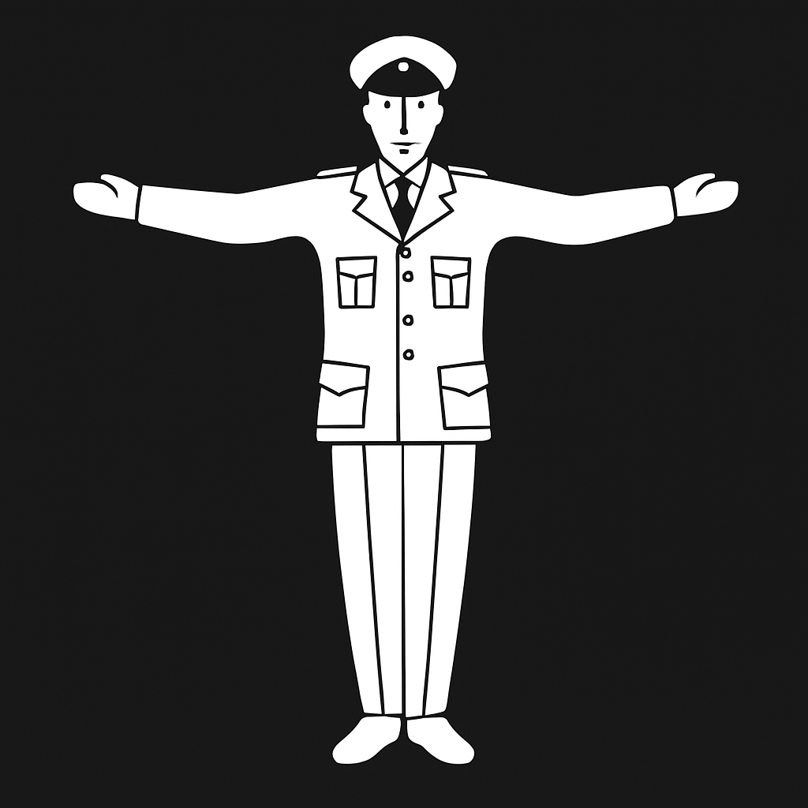
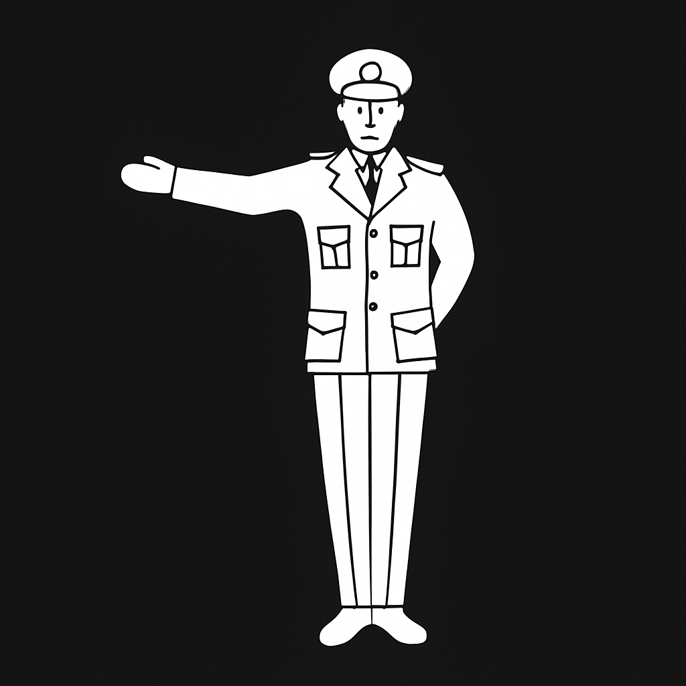
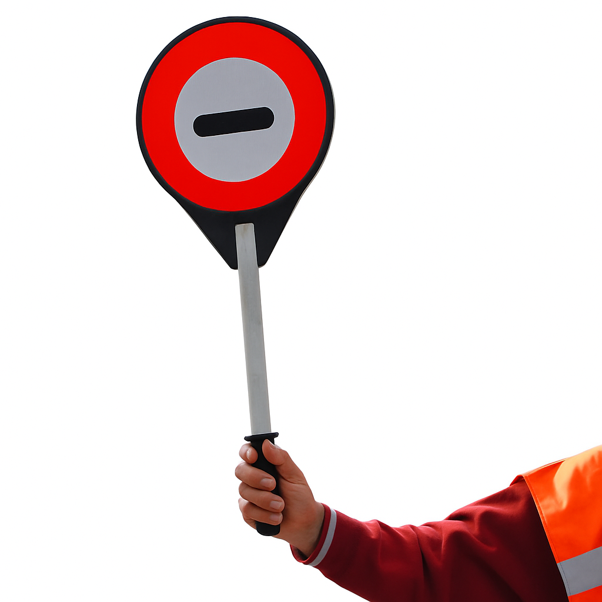

Aanwijzingen
Je bent verplicht de instructies van bevoegde personen op te volgen. Dus ook als het verkeerslicht op rood staat maar een bevoegd persoon aangeeft dat je door moet rijden, dan moet je dat doen.
Je bent verplicht de instructies van bevoegde personen op te volgen. Dus ook als het verkeerslicht op rood staat maar een bevoegd persoon aangeeft dat je door moet rijden, dan moet je dat doen.
Wanneer een verkeersregelaar dit teken geeft, moet al het verkeer stoppen.

Stopteken voor het verkeer in de toegestane richtingen. Let goed op het verkeer uit de stilgezette richtingen. Het kruispunt moet vrijgemaakt worden.

De verkeersregelaar geeft aan dat je snelheid moet verminderen.

Het verkeer dat de verkeersregelaar vanaf de rechterkant nadert, moet tot stilstand komen.

Het stopteken geldt zowel voor het verkeer dat de verkeersregelaar van voren nadert als voor het verkeer dat hem van achteren benadert.

Het verkeer dat de verkeersregelaar van achteren nadert, moet tot stilstand komen.

Je bent verplicht te stoppen voor een verkeersbrigadier die dit stopteken omhoog houdt.
